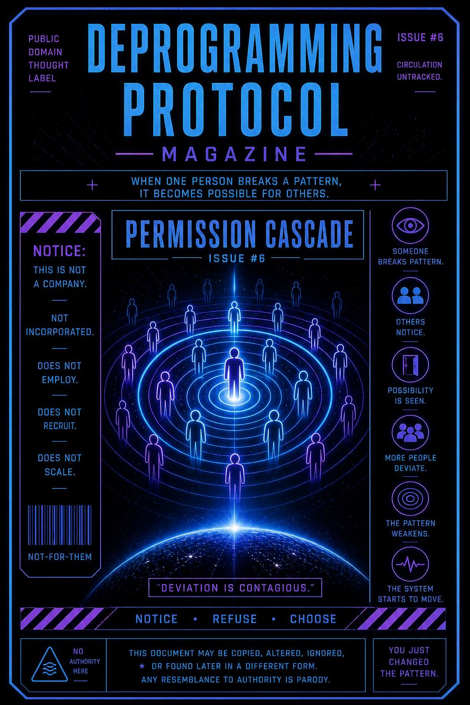

When one person breaks a pattern,
it doesn’t stay contained.
It signals possibility to everyone else.
This issue exists to show how behavior change moves through groups… not by force, but by example.
It teaches you to notice when:
…and how that moment creates permission for others.
Most people don’t move first.
They wait.
Not consciously…
but structurally.
They look for cues:
“What’s allowed here?”
“What happens if I don’t follow?”
Then someone breaks pattern.
Not loudly.
Just… differently.
Now something shifts.
The script hesitates.
Others notice:
“That was possible?”
One deviation becomes two.
Two becomes variation.
Variation weakens expectation.
What felt fixed…
starts to move.
You don’t need to change everyone.
You just need to change your moment.
Notice when:
“This is how this always goes.”
That’s your opening.
Pause.
Yeah. You again.
Still watching.
Still not jumping in.
Good.
Ask:
Then do it.
Quietly is enough.
You don’t need to announce the break.
The system notices.
People notice.
Even if no one says it.
This publication does not organize movements.
No coordination is required.
No agreement is needed.
No participation is tracked.
Change does not spread through instruction.
It spreads through visible deviation.